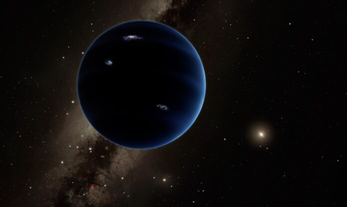

Asteroit Kuşağı
Mars ve Jüpiter arasında, belirli bir yörüngede dolanan, çeşitli büyüklük ve şekildeki kaya ve metal parçalarıdır.
Göktaşı
Asteroit ya da kuyruklu yıldız gibi çeşitli gök cisimlerinden kopmuş küçük kaya parçalarıdır.Meteor
Atmosfere giren gök taşlarıdır.Meteorit
Dünya’nın atmosferine girdikten sonra tamamen yanarak yok olmadan yeryüzüne ulaşıp yere düşen gök taşlarıdır.
Kuyruklu Yıldızlar
Buz, toz ve kayalık parçacıklardan oluşan asteroit benzeri gök cisimleridir. Sanılanın aksine "yıldız" değillerdir.Meteor Yağmurları
Gökyüzünün belirli bir bölgesinden geliyormuşçasına yoğun bir göktaşı etkinliği görülür. Bunun nedeni, Yer'in yörüngesi ile bir kuyrukluyıldızın yörüngesinin kesişmesidir. Kuyrukluyıldızın yörüngesindeki kalıntılar, Yer'in çekimi etkisiyle atmosferimize girerler. Bu da belirli dönemlerde bir göktaşı yağmuru olarak görülür, böylece meteor yağmuru adı verilen olay gerçekleşmiş olur.
ASTEROİT NEDİR?
Asteroitler Güneş’in etrafında dolanan küçük ve taş benzeri gök cisimleridir. Asteroitler gezegenler gibi Güneş’in etrafında dolansa da gezegenlerden daha küçüklerdir. Güneş Sistemimizde birçok asteroit vardır ve bunların birçoğu Mars ve Jüpiter arasında yer alan asteroit kuşağında bulunur. Asteroitler ayrıca gezegenlerin yörüngelerinde de bulunurlar ve yörüngelerinde bulundukları gezegenlerle beraber Güneş’in etrafında dolanırlar. Dünya ve birkaç gezegenin yörüngelerinde böyle asteroitler vardır.
Asteroitler nerden geliyor? Asteroitler Güneş Sistemimizin oluşumundan arta kalanlardır. Güneş Sistemimiz 4.6 milyar yıl önce büyük bir gaz ve toz bulutunun birleşmesi ile oluştu. Bu olay gerçekleştiğinde materyallerin birçoğu bu gaz ve toz bulutun merkezine geldi ve Güneş’i oluşturdu. Diğer gazlardan bazılar gezegenleri meydana getirdi. Fakat asteroit kuşağındaki materyallerin, gezegen oluşturan materyallerle birleşme fırsatı olmadı
Ayrıca hiçbir asteroit aynı şekil ve boyutta değildir. Bunun sebebi asteroitlerin Güneş’ten değişik uzaklıklarda oluşmalarıdır. Asteroitler, yuvarlak olmayan düzensiz şekilleri, boyutları (kimleri kilometrelerce çapa sahiptir, kimileri bir çakıl taşı kadar küçüktür) ve meydana geldiği materyalleri (nikel, demir gibi metaller ve kil) ile birbirinden ayrılırlar.
(Kaynak:NASA) Peki asteroitler bize ne öğretebilir? Asteroitler, Güneş Sistemimizdeki diğer gök cisimleri ile aynı zamanda oluştukları için bilim insanları, bu cisimleri inceleyerek Güneş Sistemimizin geçmişi hakkında bilgi sahibi olabilirler. Bilim insanları, asteroitler hakkındaki bilgileri de meteoritleri inceleyerek elde ederler. Meteorlar, atmosferimize girerek Dünya’ya düşmüş küçük asteroit parçalarıdır. Kaynak: NASA
